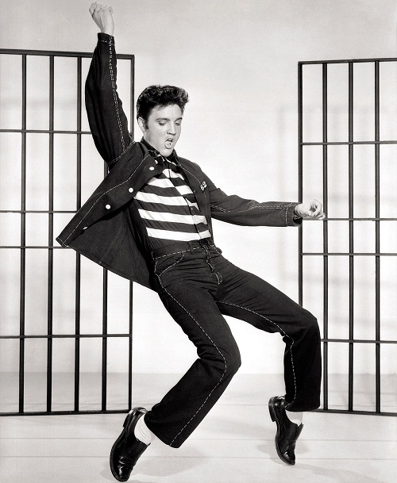

The records of the music industry
In this article you will find out about the records in regards with the albums sales and most profitable artists in the music industry.
Michael Jackson's Thriller is the best-selling album of all time. It came out on November 30, 1982 and was produced by Quincy Jones. It sold 32 million copies by the end of 1983 and as of 2021 has a sales equal 70 million units. It was certified Platinum in the United States and is the second best-seller in the country behind Their Greatest Hits (1971–1975) of Eagles released in 1976.
Their Greatest Hits (1971–1975) of Eagles is the best-selling album of all time in the United States. It premiered on February 17, 1976 and sold 38 million copies so far. It lost the crown for a decade between 2009 and 2018 to Thriller but eventually regained it. It is the biggest seller when it comes to greatest-hits compilation.

The Bodyguard: Original Soundtrack Album is the best-selling soundtrack album in history. It was released on November 17, 1992 for the film of the same title. It sold around 45 million worldwide. It is also the 4th biggest seller in general, alongside Pink Floyd and their 8th full-length album The Dark Side of the Moon. The Bodyguard was certified 18x Platinum by RIAA.
Although The Sound of Music soundtrack sold around 20 million copies, the album is not considered as part of the best-sellers list due to not having the reliable sources proving the sales. The album came out on March 2, 1965 under RCA Victor.
The Beatles are the biggest selling artists of all time. The confirmed number of all certified sold copies of all their albums is 285.4 million. A total claimed number of the sales is between 500 and 600 millions. The group debuted with their studio album titled Please Please Me on 22 March 1963. By the end of their career in 1970 the members released multiple albums with the final being Let It Be. All of them brought a massive sales despite only a decade of activity.
Elvis Presley is the biggest selling solo artist of all times. During his career spanning between 1954 and 1977 he sold 228.6 million certified units, with the claimed sales to be even 500 million. The soloist released his first eponymous record on March 13, 1956, containing 12 tracks including 6 singles. His biggest seller is - surprisingly - his Christmas album released on October 15, 1957.

Elvis' Christmas Album is the best-selling Christmas album of all time. It came out on October 15, 1957 and sold around 20 million copies. It contains 12 tracks including well known songs such White Christmas, Santa Claus Is Back in Town and Silent Night.
Madonna is the biggest selling female artist of all time. Her sales are estimated at 275 to 300 million copies, with a total number of 180.1 certified units. Her career began in 1979. In 1983 she released her record titled Madonna, which made the vocalist a big star. Her discography includes bestsellers Like A Virgins (1984), True Blue (1986) and Ray Of Light (1998).
The Japanese music market is the second biggest market in the world. The biggest seller album in the country is First Love by Utada Hikaru. It was released in 1999 under Toshiba EMI, as a debut Japanese album of the vocalist. It sold more than 8,000,000 copies so far. The release was the second full-length album of Utada, after Precious released in 1998 and sung entirely in English.
B'z is the best-selling artists of all time in Japan. The duo is composed of a composer Matsumoto Takahiro and the vocalist Inaba Koshi. B'z is a rock band which debuted in 1988 and is still active. It sold 82.62 million units of albums in Japan and more than 100 million albums worldwide. They are known for releasing 25 consecutive number 1 albums and 49 number 1 singles.
The biggest selling solo artist in Japan is Ayumi Hamasaki. She sold around 60.94 million copies of their albums and is in the third position overall after B'z and an idol group AKB48 which sold 62.05 million units. Hamasaki debuted with her first studio album titled A Song for XX and the single Poker Face. The debut release sold 2,385,000 copies in total, including the single sales of 775,000. Her biggest-selling release is a compilation album titled A Best released in 2001. It sold 5,330,000 copies and is currently in the second place on the biggest-sellers of all time in Japan list after Utada's First Love.